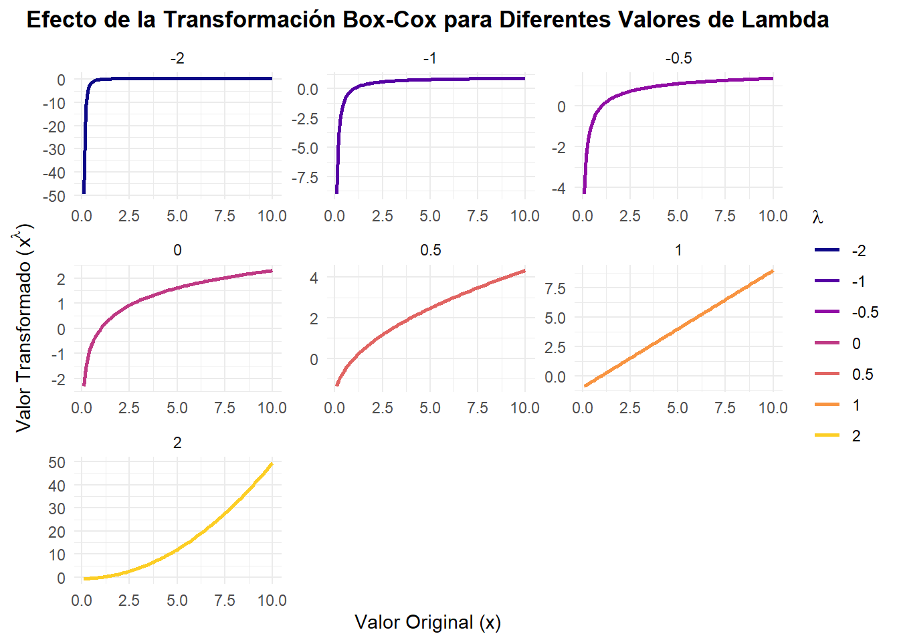

La Transformación Box-Cox es una técnica estadística utilizada para transformar datos no normales para que se aproximen a una distribución normal. Esto es crucial en muchas técnicas estadísticas que asumen que los datos (o los errores del modelo) se distribuyen normalmente, como la regresión lineal, el análisis de varianza (ANOVA) y algunas gráficas de control.
Muchos modelos estadísticos, especialmente los paramétricos, asumen que los datos siguen una distribución normal. Si los datos están sesgados (es decir, no son simétricos, con una “cola” más larga hacia un lado) o presentan una distribución no normal, aplicar la transformación Box-Cox puede ayudar a que se parezcan más a una campana de Gauss.
Esto permite que las pruebas de hipótesis y los intervalos de confianza derivados de estos modelos sean más válidos y precisos.
2. Estabilización de la varianza (Homocedasticidad):
En muchos análisis, como la regresión lineal, se asume que la varianza de los errores es constante en todos los niveles de las variables predictoras (homocedasticidad).
Si la varianza cambia a medida que los valores de la variable aumentan o disminuyen (heterocedasticidad), los resultados del modelo pueden ser ineficientes o sesgados.
La transformación Box-Cox puede ayudar a estabilizar esta varianza, haciendo que el modelo sea más robusto y sus estimaciones más confiables.
3. Mejora de la linealidad:
En la regresión lineal, se asume una relación lineal entre la variable dependiente y las variables independientes. Si la relación no es lineal, transformar la variable dependiente (o incluso las independientes, con la transformación Box-Tidwell) puede ayudar a establecer una relación más lineal, mejorando el ajuste del modelo.
4. Facilita la interpretación y el análisis:
Al normalizar y estabilizar los datos, los patrones subyacentes se vuelven más discernibles y fáciles de analizar.
También puede reducir la influencia de valores atípicos y extremos, lo que puede distorsionar los resultados.
Encontrar \(\lambda\)
La transformación Box-Cox no es un cálculo directo y único, sino un proceso para encontrar el valor óptimo del parámetro\(\lambda\) que mejor normaliza los datos. Una vez que se encuentra ese \(\lambda\) óptimo, se aplica la fórmula de la transformación a los datos.
El método más común para encontrar el \(\lambda\) óptimo es el de Máxima Verosimilitud (Maximum Likelihood Estimation - MLE). Aquí te explico los pasos generales:
Define la función de verosimilitud: Para cada posible valor de \(\lambda\), se transforma la variable \(Y\) (los datos) utilizando la fórmula de Box-Cox:
Si \(\lambda \neq 0\): \(Y^{(\lambda)} = \frac{Y^\lambda - 1}{\lambda}\)
Si \(\lambda = 0\): \(Y^{(\lambda)} = \log(Y)\)
Luego, se asume que la variable transformada \(Y^{(\lambda)}\) sigue una distribución normal. La función de verosimilitud para una distribución normal es:
\(Y_i^{(\lambda)}\) es la \(i\)-ésima observación transformada.
\(\mu\) y \(\sigma^2\) son la media y la varianza de la variable transformada (que también deben estimarse para cada \(\lambda\)).
\(J(\lambda, Y)\) es el jacobiano de la transformación, que es esencial para asegurar que la probabilidad total se mantenga constante después de la transformación. Para la transformación Box-Cox, el jacobiano es \(\prod_{i=1}^{n} Y_i^{\lambda-1}\).
En la práctica, se suele trabajar con el logaritmo de la función de verosimilitud (log-verosimilitud) porque es más fácil de maximizar.
Iterar sobre un rango de valores de\(\lambda\): Se prueba un rango de valores para \(\lambda\) (por ejemplo, de -2 a 2, o -1 a 1, con incrementos pequeños como 0.1 o 0.01).
Para cada\(\lambda\):
Transforma los datos \(Y\) usando el \(\lambda\) actual.
Calcula la media (\(\mu\)) y la varianza (\(\sigma^2\)) de los datos transformados.
Calcula el valor de la función de log-verosimilitud para ese \(\lambda\).
Selecciona el\(\lambda\) óptimo: El valor de \(\lambda\) que produce la máxima log-verosimilitud es considerado el \(\lambda\) óptimo para transformar los datos.
Aplica la transformación: Una vez que tienes el \(\lambda\) óptimo, aplicas la transformación Box-Cox con ese \(\lambda\) a todos los datos originales.
library(ggplot2)library(dplyr) # Para manipulación de datoslibrary(tidyr) # Para pivot_longerlibrary(latex2exp)# 1. Crear un conjunto de datos original de ejemplo# Usaremos un vector de valores positivos para demostrar la transformación.# Aquí, usaremos un rango simple para visualizar el efecto.original_data <-data.frame(x =seq(0.1, 10, length.out =100) # Evitar 0 para Box-Cox)# 2. Definir una función Box-Cox simple# Esta función aplica la transformación Box-Cox para un dado lambdabox_cox_transform <-function(y, lambda) {if (lambda ==0) {log(y) } else { (y^lambda -1) / lambda }}# 3. Generar las transformaciones para diferentes lambdas# Creamos un vector de lambdas para visualizarlambdas_to_plot <-c(-2, -1, -0.5, 0, 0.5, 1, 2)# Aplicar cada transformación y almacenar los resultadostransformed_data <- original_data %>%rowwise() %>%# Aplicar la función por filamutate(across(.cols = x,.fns =setNames(lapply(lambdas_to_plot, function(l) ~box_cox_transform(., l)),paste0("lambda_", lambdas_to_plot) ),.names ="{.fn}") ) %>%ungroup()# 4. Transformar los datos a formato "largo" para ggplot2# Esto es necesario para graficar múltiples líneas por lambdaplot_data <- transformed_data %>%pivot_longer(cols =starts_with("lambda_"),names_to ="lambda_value",names_prefix ="lambda_",values_to ="transformed_x" ) %>%mutate(# Convertir el valor de lambda a factor para que ggplot2 lo trate como discreto# y para un mejor orden de las leyendas.lambda_value =factor(lambda_value, levels =as.character(lambdas_to_plot)) )# 5. Generar el gráfico ggplot2ggplot(plot_data, aes(x = x, y = transformed_x, color = lambda_value)) +geom_line(size =1) +labs(title ="Efecto de la Transformación Box-Cox para Diferentes Valores de Lambda",x ="Valor Original (x)",y =TeX("Valor Transformado ($x^\\lambda$)"),color =expression(lambda) # Usar expresión para el símbolo lambda en la leyenda ) +theme_minimal() +theme(plot.title =element_text(hjust =0.5, face ="bold"),legend.position ="right" ) +scale_color_viridis_d(option ="plasma", end =0.9) +facet_wrap(.~lambda_value, scales ="free")

📦 En Python con scipy.stats:
# pip install scipyfrom scipy.stats import boxcoxfrom scipy import stats#Encontrar el lambda óptimo y aplicar la transformación usando boxcox()# boxcox() de scipy.stats devuelve una tupla: (datos_transformados, lambda_optimo)datos_transformados, lambda_optimo = boxcox(y)
📦 En R con MASS::boxcox():
library(MASS)#Encontrar el lambda óptimo usando boxcox()# boxcox() requiere un objeto de clase 'lm' (modelo lineal) o una fórmula.# Una forma sencilla es usar un modelo que solo predice una constante (lm(y ~ 1)).boxcox_result <-boxcox(y ~1, plotit =TRUE, lambda =seq(-2, 2, 0.1))